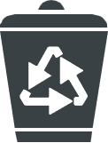

나를 소개하는 세 가지 키워드
-
#회계 ❯

-
#친환경 ❯
-
#풍경 사진 ❯
회계 🖋
앞으로 하고 싶은 것이 무엇인지 단정 짓지 못한 상태에서 뭐라도 더 배우자는 생각으로 대학교에 진학했습니다.
그렇게 들어간 학과의 강의는 나쁘지 않았지만, 좋지도 않았습니다. 전공보다 교양 수업이 더 유익하다고 느껴질 정도였기 때문입니다.
그 과정에서 기업의 언어라고도 불리는 회계에 큰 매력을 느꼈고, 회계학과의 전공 수업까지 들어본 후 전과를 하기로 했습니다.
전과가 확정된 지 얼마 되지 않았기 때문에 같은 과 동기보다는 회계 관련 전문지식이 좀 부족합니다.
하지만 앞으로 회계학과생으로서의 역량을 풍부하게 키워나갈 예정입니다!
친환경 
예전부터 수많은 과학자들이 경고를 보냈지만, 현재 지구의 환경은 많이 파괴되어 있습니다.
지금은 너무 늦은 것처럼 보이기도 합니다.
하지만 늦었다고 해서 포기할 수는 없습니다. 할 수 있는 한 환경을 지키려고 노력하는 것이 중요하다고 생각합니다.
그래서 배달 음식이 플라스틱 용기에 담겨왔을 때는 최대한 깨끗한 상태로 만들어 분리 배출하며,
가끔 길거리 쓰레기 줍기 등의 소소한 환경보호활동도 하고 있습니다.
주변 사람들에게 유난이라는 소리를 들을 때도 있지만 꿋꿋하게 친환경적인 삶을 살기 위해 노력하고 있습니다.
풍경 사진
풍경 사진 찍는 것을 좋아합니다.
고등학교 때부터 친구랑 석식을 먹고 나오다가도 하늘이 예쁘면 사진을 찍었고, 하굣길에도 나무와 하늘의 색채가 조화롭게 느껴지면 사진을 찍었고,
문득 길을 가다가 계절감이 느껴지는 풍경이 보이면 또 사진을 찍었습니다.
매 순간 변하는 자연의 모습을 오랫동안 담아둘 수 있으며, 어떤 각도로 찍고 어디에 초점을 맞추는지 등에 따라서 사진이 나타내고자 하는 주제가 확 달라진다는 점이 사진의 매력이라고 생각합니다.
잘 찍는다고 말하기엔 애매한 실력이지만, 휴대폰 카메라 말고 값싼 디지털카메라도 함께 사용해보며 다양한 방식으로 사진을 찍는 중입니다.